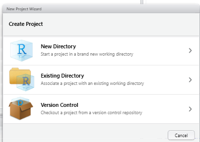

6 Projets R
Un projet R permet de regrouper votre travail dans un dossier portable et autonome. A l’intérieur du projet, tous les scripts, fichiers de données, figures/sorties et historiques pertinents sont stockés dans des sous-dossiers et, surtout, le répertoire de travail est le dossier racine du projet.
6.1 Utilisation suggérée
Une façon courante, efficace et sans probléme d’utiliser R consiste à combiner ces 3 éléments. Un projet de travail discret est hébergélé dans un projet R. Chaque élément est décrit dans les sections ci-dessous.
- Un projet R
- Un environnement de travail autonome avec des dossiers pour les données, les scripts, les résultats, etc.
- Un environnement de travail autonome avec des dossiers pour les données, les scripts, les résultats, etc.
- Le paquet here pour les chemins de fichiers relatifs
- Les chemins de fichiers sont écrits par rapport au dossier racine du projet R - voir Importation et exportation pour plus d’informations.
- Les chemins de fichiers sont écrits par rapport au dossier racine du projet R - voir Importation et exportation pour plus d’informations.
- Le paquet rio pour les importations/exportations
import()etexport()traitent tout type de fichier par son extension (par exemple .csv, .xlsx, .png).
6.2 Créer un projet R
Pour créer un projet R, sélectionnez “Nouveau projet” dans le menu Fichier.
- Si vous voulez créer un nouveau dossier pour le projet, sélectionnez “Nouveau répertoire” et indiquez où vous voulez qu’il soit créé.
- Si vous voulez créer le projet dans un dossier existant, cliquez sur “Répertoire existant” et indiquez le dossier.
- Si vous voulez cloner un dépôt Github, sélectionnez la troisiéme option “Version Control” et ensuite “Git”. Voir la page contrôle de version et collaboration avec Git et Github pour plus de détails.

Le projet R que vous créez se présente sous la forme d’un dossier contenant un fichier .Rproj. Ce fichier est un raccourci et probablement la principale façon d’ouvrir votre projet. Vous pouvez également ouvrir un projet en sélectionnant “Ouvrir un projet” dans le menu Fichier. Alternativement, sur le côté supérieur droit de RStudio, vous verrez une icône de projet R et un menu déroulant des projets R disponibles.
Pour quitter un projet R, vous pouvez soit ouvrir un nouveau projet, soit fermer le projet (Fichier - Fermer le projet).
Changer de projet
Pour passer d’un projet à l’autre, cliquez sur l’icône et le menu déroulant du projet R tout en haut à droite de RStudio. Vous verrez les options Fermer le projet, Ouvrir le projet, et une liste de projets récents.

Paramétres
Il est généralement conseillé de démarrer RStudio à chaque fois avec une “ardoise propre” - c’est-à-dire avec votre espace de travail non préservé de votre session précédente. Cela signifie que vos objets et résultats ne persisteront pas d’une session à l’autre (vous devrez les recréer en exécutant vos scripts). C’est une bonne chose, car cela vous obligera à écrire de meilleurs scripts et à éviter les erreurs à long terme.
Pour configurer RStudio de maniére à ce qu’il fasse “table rase” à chaque démarrage :
- Sélectionnez “Options du projet” dans le menu Outils.
- Dans l’onglet “Général”, configurez RStudio pour ne pas restaurer les .RData dans l’espace de travail au démarrage, et pour ne pas sauvegarder l’espace de travail en .RData à la sortie.
Organisation
Il est courant d’avoir des sous-dossiers dans votre projet. Pensez à avoir des dossiers tels que “données”, “scripts”, “figures”, “présentations”. Vous pouvez ajouter des dossiers de la même maniére que vous ajouteriez un nouveau dossier sur votre ordinateur. Vous pouvez également consulter la page sur les Interactions avec les répertoires pour apprendre à créer de nouveaux dossiers à l’aide de commandes R.
Contrôle de version
Pensez à un systéme de contrôle de version. Cela pourrait étre quelque chose d’aussi simple que d’avoir des dates sur les noms des scripts (par exemple “transmission_analysis_2020-10-03.R”) et un dossier “archive”. Vous pouvez également envisager d’avoir un texte d’en-téte commenté en haut de chaque script avec une description, des balises, des auteurs et un journal des modifications.
Une méthode plus complexe consisterait à utiliser Github ou une plateforme similaire pour le contrôle de version. Voir la page contrôle de version et collaboration avec Git et Github.
Une astuce : vous pouvez effectuer une recherche dans l’ensemble d’un projet ou d’un dossier à l’aide de l’outil “Rechercher dans les fichiers” (menu édition). Il peut rechercher et même remplacer des chaînes de caractères dans plusieurs fichiers.
6.3 Exemples
Voici quelques exemples d’importation/exportation/sauvegarde utilisant here() à partir d’un projet R. Pour en savoir plus sur l’utilisation du paquet here, consultez la page Import and export.
Importer linelist_raw.xlsx du dossier “data” de votre projet R
linelist <- import(here("data", "linelist_raw.xlsx"))Exportation de l’objet R linelist en tant que “my_linelist.rds” dans le dossier “clean” du dossier “data” de votre projet R.
export(linelist, here("data","clean", "my_linelist.rds"))Enregistrement du tracé le plus récemment imprimé sous le nom de “epicurve_2021-02-15.png” dans le dossier “epicurves” du dossier “outputs” de votre projet R.
ggsave(here("outputs", "epicurves", "epicurve_2021-02-15.png"))6.4 Ressources
Page web de RStudio sur l’utilisation de projets R